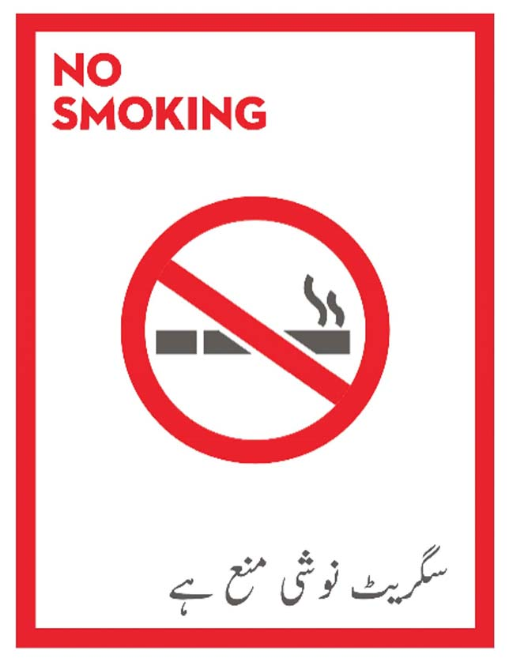

HSSE PRINCIPLES:
Health, Safety, Security and Environment is a core Taj Gasoline value The handling of large movement of
heavy and light vehicles
& sale of flammable & hazardous materials calls for responsible and safe operations, and it is our
collective aim to manage
this safely, responsibly and sustainably.
We place a crucial importance as part of all our initiatives for managing safety in a way that protects our
people, installations,
and processes, while working towards Environmental Protection and Sustainability. The following principles
and guidelines in this
chapter, aim to aid a journey of continuous improvement in Safety Culture at our Company and Retail
Stations. This reflects our
belief that all incidents our preventable and our goal to have zero incidents in our business.
OUR SAFETY PRINCIPLES:
- All incidents can be prevented.
-Management at all levels is accountable for safety and leads by example.
-We plan and train for safety
-Everyone looks out for each other, no matter who they work for.
- Everyone has the authority to STOP any unsafe work.
-Safe behaviour is recognized, acknowledged and reinforced
-Zero tolerance for safety breaches.
HSSE OBJECTIVE AT TAJ GASOLINE:
-Minimize the probability of the accidents which have the potential to cause injury, disablement, lossof
life & property.
-Ensure safe handling of all fueling operations-receiving fuel deliveries & refueling customer vehicles.
Ensure that the area we
operate in is secure and free from potential security threat thus providing a safe environment to our
Customers and our Retail
Station Staff.
-Preventive measures have been taken in maintaining equipment which enables staff members to work in a safe
environment.
-Minimize impact to environment around the Retail Station, by controlling probable situations which have the
potential to adversely
affect the environment such as waste disposal and spills.-
-Minimize undue wastage of the material resources including water and other solvents, which help in
preventing environment pollution.
-Educate our employees so that they can be aware of their own safety, health & well-being as well as their
responsibility towards
the environment.
-Continuously train & engage employees so that they are able to identify & eliminate unsafe situation or
practice.
LIFE SAVING RULES:
-Life Saving Rules have been defined by International Association of Oil & Gas Producers and are in place to
safeguard
individuals from harm.
-Life Saving Rules concentrate on actions where breaking the Rules has the highest risk of causing serious
injury or death.
-Life Saving Rules would guarantee a secure environment at retail locations for consumers, retailers, site
staff, and contractors,
-with the goal of eradicating the site-specific occurrences that are the main causes of fatalities.
-Retailers are urged to abide by these guidelines and make sure that their Service Champions have received
the appropriate training &
are aware of them, and will follow them as appropriate when needed.
MANAGING HSSE AT RETAIL STATION:
Taj Gasoline aspires to cultivate a culture in which the safety of our employees, customers and the
communities in which we work is of paramount importance. As a Retailer & Site Manger you play the most
critical role being close
to our operations at Retail Station in ensuring that we meet our aspiration of Zero: zero incidents, zero
accidents, and zero
environmental releases.
It is your key responsibility to understand and eliminate day-to-day perils by addressing the behaviours,
actions and conditions that can lead to potential harm across all functional areas at the station including
field operations and
office functions.
This can be achieved by taking the following steps:
SAFETY LEADERSHIP:
- Challenge yourself and others to work more safely. Be seen to intervene. Remember, you are setting an
example to all those whom you work with.
- Keep HSSE an active part of your discussions with your staff
- Ask questions to your staff and check whether they understand the real risks that they face; and have
plans in place to address them. Explain risks through story-telling.
- Always intervene when you see behaviors that conflict with HSSE guidance.
- Encourage your staff to intervene directly and immediately; and ensure that there are consequences
associated with failing to comply or intervene.
- Review HSSE Risks and their mitigations regularly throughout the year.
HEALTH:
We have a commitment towards our valued customers and our Station Staff alike to always provide them with
healthy environment
and will always cherish there coming refuel or work at Taj Gasoline Stations. This section provides common
guidelines with
respect to managing Health Risks at the Retail Station. Key areas to monitor and maintain are:
FOOD & WATER HYGIENE:
Unhygienic Food & Water are a source multiple diseases which can be particularly dangerous for travelers
with
access to medical facilities during their journey. There are multiple areas of exposure for our Staff as
well as Customers:
- Water Cooler at Retail Station
- Water offer to customers in jugs and glasses
- Fresh Food Offer at Salam Mart
- Fresh food offer in Truck Port and other NFR
- Staff food facility if offered
WATER HYGIENE:
Key Guidelines:
- Ensure Water Cooler has filtration installed and filters are replaced on regular basis as per
manufacturer guideline
- Ensure water cooler body is cleaned and sanitized from inside atleast one every 3 months
- Ensure taps are free of mold and build up and tap filters are cleaned regularly
- Ensure Jugs and Glasses are cleaned regularly multiple times during the day with
dish washing soap
- Ensure the staff member serving water has clean hands which are washed with soap
regularly throughout the day
FOOD HYGIENE:
Key Guidelines:
- Monitor fresh food and packaged food inside the Salam Mart for Expiry. Particularly check
imported items, dairy items and beverages such as juices.
- Regularly visit facilities such as truck port for hygiene standards
- In case staff food facility is provided, regularly eat meal with the site staff to ensure
quality of food
PRODUCT HANDLING:
Products handled and dispensed in Retail Station require specific precautions & response. See the guidelines
below for product
specific Hazards, Precautions & First Aid Measures.
NO SMOKING:
Smoking is injurious to health. It also causes a safety risk to environment where there is flammable fuel. A
retail fuel
station (forecourt as well as office) is a no smoking zone.
No Smoking signs should be placed at forecourt and all other areas. No smoking requires strict compliance at
all times across the station.

SAFETY:
HAZARDOUS AREA (ZONE) CLASSIFICATION:
Retail Station is divided into three Hazard Zones, high degree of risk in Zone 0 and lowest risk in Zone 2. Site
Staff must be aware of these hazardous zones and only trained staff should work in Zone 0 with high sense of
awareness of risks.
STAFF SAFETY:
To keep staff safe on the forecourt, ensure you and your staff are aware of and follow these guidelines and
regualry engage Staff on these during Shift Opening Huddles. Biggest risk to Staff Safety is traffic & unsafe
practices by customers.
1 Pay special attention to traffic on the forecourt whilst on the forecourt. Watch for
oncoming traffic; work with your face towards the site entrance/oncoming traffic. When you are not servicing
customers, position yourself against oncoming traffic (for example between the pumps).
2 To increase visibility on the forecourt and reduce the risk of incident, everybody
working on a
forecourt apart from those in Taj Gasoline Uniform (Retailers, Contractors, Suppliers and Taj
Gasoline Staff) should always wear a Safety Vest.
3 Always wear the right PPE defined for the activity and wear closed shoes.
4 When refueling, position yourself behind the fuel hose, this in order to avoid being
pulled over by
the hose when a car unexpectedly drives off.
5 When working on the forecourt (for example cleaning equipment):
- Cordon your working area off properly, so you can do the job without being affected by traffic.
- Work as much as possible with your face in the direction of oncoming traffic.
- Make sure you are visible, especially when it’s dark or raining.
- If needed, ask a second team member to look out for traffic and guide traffic when needed.
6 To avoid staff from getting hurt by forecourt traffic whilst walking on the
forecourt, determine and agree safe walking routes for each individual, also routes to and from parking facilities
when starting or leaving the job.
REFUELING & CUSTOMER SAFETY:
There are 6 minimum safety standards on the forecourt that should be made clear to customers by having the
correct notices displayed (i.e., HSSE notices) and through the conversations staff have with customers.
The 6 minimum safety standards are:
- No smoking in defined areas.
- No use of mobile phones in defined areas.
- Motorcycle Customers must get off their bikes while refueling.
- Engines off during refueling.
- Only approved containers used during refueling.
- No other ignition sources, e.g., matches, lighters.
Retailer & Site Manager should ensure Site Staff:
- Are aware of these guidelines.
- Intervene with customers when needed.
- Stop the refueling when customers decide not comply with these guidelines.
- Monitor (for example via daily Ready for Customer Checklist) to check that the HSSE notices
are still readable.
HOW TO PERFORM REFUELING WITH SAFETY?
ELECTRICAL SAFETY:
This section explains ways to reduce risk associated with working with electricity, one of the major site dangers.
Making ensuring that the circuit is not overloaded and that working with electricity is done safely is crucial.
Working with electricity can cause:
- Electrocution due to contact with high currents
- Fire/explosion that may be caused for several reasons like overloading of circuits, shorts in wiring or
the use of equipment in a hazardous area (Zone 0 & Zone 1).
In order to prevent these consequences, some basic barriers should be in place:
- When working on electrical equipment always switch off the power and make sure nobody can
switch it on while work is being done by working with a special lock
- Avoid the use of extensions leads and junction boxes
- Check equipment at least annually and pay special attention to cords, plugs and connections
- Air conditioners, heaters and food equipment take a lot of power; ensure that the electrical circuit
is not going to be overloaded.
- Details of the site’s electrical system should be available, including circuit diagrams equipment and
cable details, breaker sizes, panel details, etc.
CARD PAYMENT TERMINALS:
Portable credit/debit card terminals may be used on the forecourt by trained Staff Members provided suitable
procedures are established and adopted that will prevent the terminals from being taken into the temporary
hazardous areas that will arise during petrol dispensing.
- The procedure will include the Service Champions ensuring that there are no petrol spillages in the
area and that fuel is not being dispensed from any nozzles within 0.5 meters of where the terminal is
to be used.
- Do not conduct following activities in Hazardous Zone 0 & 1
Charging of Handheld Terminals
Connect or Disconnect power plug of Handheld Terminals
Open or Separate Battery Packs
- Customers should be inside the vehicle when the transaction is being processed.
- Staff should not process the transaction and intervene if the customer is not observing our
forecourt safety pillars. [Engine on, Smoking, Biker Straddling, Unauthorized Container, Mobile Phone]
- Staff should stand at the safe position, and should pay attention to the moving vehicles when they
are walking at the forecourt.
- Staff should be wary that the handheld terminal might fall and cause spark and/or injury on the foot
VISITOR MANAGEMENT:
Visitors to the Retail Station must be made aware of HSSE risks and emergency response. Site Manager should
welcome guests & give safety briefing including:
- Welcome to the Retail Station with a brief overview of facilities & staff
- Explain key Site Station risks and your plan on managing them
- Explain emergency response procedure
- Show location of the assembly point
- Demonstrate sound of whistle so that the visitors are aware of trigger for emergency response
- In case an emergency drill is planned let them know
MUST ENSURE:
- Ensure there are no safety drills planned
- All visitors are wearing high visibility reflective vest
- First aider is available
- Ensure mobile phones are submitted in the office before going to Hazardous Zone 0 & 1
SLIPS AND TRIPS:
Slips & Trips are the main reason for smaller incidents requiring medical treatment. To prevent them, the Site
Staff should be aware of the following guidelines:
- Take weather conditions into account when working on the forecourt. Rain may make the for
court more slippery.
- In rainy conditions make sure the all interior floors are kept dry (Salam Mart, Toilets, Offices)
- Pay attention to uneven surfaces and fix them as soon as possible
- Wear appropriate shoes especially while working at height (Tank Lorry Dip, etc)
- Avoid empty boxes and packaging on the floor especially in the storage rooms
- Keep walking on paths free of obstacles
- Mark or barricade risk areas with signs or cones as appropriate.
WORKING AT HEIGHT:
Working at height (above 1.8 meters) has caused a lot of incidents and also some fatalities. As a result, the site
staff should not work at heights above 1.8 meters (6 feet). If it is not possible to eliminate working at a height
above 1.8 meters, the following guidelines should be complied with:
- Working from stand-alone ladders is not allowed for all activities occurring at Taj Gasoline Retail
locations.
- A-frame or multi-purpose ladders may be used as a last resort provided; they are stable. Stability can
be achieved by using the ladder on a level surface, having a second person foot the ladder or by
securing the ladder to a fixed thing
- It is essential that the workers performing the work assess the risk at each occasion to ensure that
the choice of working at height equipment is suitable for the task at hand.
The following guidelines should be complied with regardless
of which height Site Staff are working:
- Steps and ladders must be in good condition, i.e., no broken or bent steps or beams and proper
anti-slip feet
- Place steps and ladders on a non-slippery, stable surface
- Make sure the working area is barricaded
- Ensure you don’t place steps and ladders in front of doors, unless they are locked
- When on a step or ladder never stretch your arms or legs to grasp an object
- If you need to use a high ladder, ask for help (a second person to hold the stair’s base)
- Do not lift heavy boxes from a ladder. Make sure all heavy boxes are stored on the ground or at
a lower height
- Make sure storage racks are fixed to the walls so they can’t fall if ladders are put against it
- Use an appropriate ladder. Never use chairs, boxes or anything not suitable to climb on.
PERSONAL PROTECTIVE EQUIPMENT:
PPE FOR DIFFERENT SCENARIOS:
FIRST AID KIT:
Minimum contents for First Aid Kit:
SPILL KIT:
Retailers to ensure that material for absorbing spills is present on site, this should be contained in a site
spill kit. In case a spill occurs, it should be immediately contained & cleaned using the spill kit.
Following are the items:
Sand 200kg
Absorbents
Brooms
Brush
Plastic dust pan
Aluminum bucket
Goggles
Gloves
Cordon off ribbon
Traffic cones
Jute bag
CCTV:
Closed circuit TV Cameras must be installed on sites to control various areas of the site (inside and outside the
building). CCTV Footage becomes critical in investigation in case of an incident.
Key guidelines:
- CCTV Cameras must be regularly cleaned
- Minimum 14 days of backup data must be stored at all times
- Remote monitoring through internet must be available
- CCTV power switch should be installed in a hidden location and access limited only to
Retailer & Site Manager
- NVR and recording devices should be locked and access limited only to Retailer & Site Manager
SAFES / UNDER FLOOR SAFES (STORE SALES AREA)
All Retail Stations must be equipped with Underground Safe.
- Underground safe must be located in a cash room with controlled access
- Cash Room entry must be monitored by CCTV Camera
- Cash Room must have a strong metal door and lock and no windows
- Drop chute must be available outside the cash room for Cashiers to drop cash into the safe
without opening the cash room
- Underground safe must be operated only with two separate keys
One key should be available on site
One key should be available off site only
One key should be available with Cashier and one key with Site Manager. No other person
is authorized to retain Safe key.
To manage sites with under floor safes:
- The Cash Room must be secured at all times
- To reduce the impact on customers, the safe should be emptied during quiet periods.
- All Cash Counting must be done within the Cash Room while it is locked
- Safe key should not be left inside the Site Office, drawers, etc
MANAGING CASH SECURITY ON SITE
(TILL LIMITS, ETC)
We must implement and adhere to a highly tight Cash Management Procedure to ensure that thieves won't steal large
sums of money and that a robbery is not profitable. The aim of this section is to reduce “Attractiveness” of the
Retail Station to potential robbers.
Retailer & Site Manager should monitor this by conducting spot checks on Staff during a Shift to ensure that till
limitations and forecourt cash restrictions (for attended serve locations) are properly adhered to.
Some specific guidelines are:
Make frequent deposits to the drop-safe facility throughout a shift period.
Ensure the cashier cabin is inaccessible by customer during a drop safe.
- Make sure the office & cash room is locked whenever a Cash in Transit (CIT) company counts
& collects the money
- Keep the cash drawer closed after each transaction
- Make sure high value items (watches, keys, phones, wallets, money) are not in sight of customers
- Never count money in front of customers before a drop safe.
- Cash limit for diesel cashier is PKR 100,000/- (Excess should be immediately deposited).
- Petrol limit for cashier is PKR 15,000/- (Cash should not be displayed in hand and kept in secure pouch)
MANAGING CASH SECURITY DURING
BANK TRANSFER
To make sure the Retailer or Site Manager are not robbed whilst they are bringing money to the bank, it is
mandatory to hire a Cash in Transit company to collect to money at the site and take it to the bank.
Cash in Safe & Cash in Transit insurance is also recommended.
Some important guidelines on Cash Collection:
In cash Cash Collection Facility is not available in the area, cash may be transferred to bank in small batches.
CRITICAL SECURITY THREATS AND
HOW TO RESPOND?
ROBBERIES:
Despite security procedures and precautions taken, the retail site can still be robbed. Therefore, we need to
make
sure Site Staff are trained on how to prevent a robbery, what to do during a robbery and what to do after a
robbery.
There is one Golden Rule: Give the money to any robbers and don’t be a hero. The safety and security of Staff is
more important than the money.
HOW TO PREVENT A ROBBERY:
- Site Staff who are alert and standing attentive facing the site entrance can often deter criminal activity
e.g., robberies. Always keep active and alert even when there are no customers.
- Make sure the robber can’t see what is in the till. Follow the Cash Management guidelines
- Scan the inside and outside of the premises and CCTV frequently.
- Watch for strangers loitering on or around the premises or sitting in parked vehicles. Let them be
aware that they have been noticed.
- Should any member of staff have reasonable doubts about a person’s intentions, the door to the
Cashier Cabin should be locked.
- By welcoming every customer to the site, you have an opportunity to see and recognize potential robbers
- Never allow unauthorized people into the Cashier Cabin or Site Office. Any person who requests
access to staff areas, console area/office, must be asked for valid identification.
- Doors Cashier Cabin and Office Area should be closed and locked at all times to avoid
unauthorized people from entering
- Do not give out information over the telephone. Never talk about security facilities or procedures
to other people
WHAT TO DO DURING A ROBBERY?
- Follow the instructions given by the robber
- Do not resist the robber
- Show your hands and make no unexpected movements
- Don’t look in the eyes of the robber
- Raise alarm only after the robbers are gone and don’t chase the robber
- In case there are other people in the store or storage room, inform the robber. This is to avoid
unexpected situations for the robber, which might trigger dangerous reactions.
- COPS [Calm, Obey, Picture & Safeguard] Principle is available in the associated document.
WHAT TO DO AFTER A ROBBERY?
- Raise alarm through the system and by calling Police and after the robber has left
- Don’t talk to the press and don’t disclose the amount taken in the robbery
- Secure CCTV footage
- Don’t touch anything or move objects till after Police investigation
- Try to write down a possible description of the robber(s).
BOMB THREATS
If you receive a bomb threat:
- Remain calm and polite.
- Listen without interrupting.
- Note the time, date and duration of call.
- Ask:
- Where is the bomb located?
- What does it look like?
- When is it timed to go off?
- Call the Police.
- Call your manager/supervisor.
- Evacuate and seal off the area.
- Inform the Taj Gasoline Area Manager.
- Do not touch anything.
- Never start looking for a possible bomb yourself. Leave it to the Police and those who understand
these things to look after the search and to deal with any suspicious item which is found
- Always take a bomb threat seriously.
AGGRESSION / ASSAULT:
This section deals with aggression, including assault, intimidation, vandalism, physical/bodily injuries, verbal
acts of threatening behavior and attempts to cause injury.
This might be caused by circumstances beyond our control like private problems or alcohol and drug abuse but also
circumstances experienced on site, like broken equipment, impolite treatment and even incorrect quantity or
prices.
YOUR RESPONSIBILITIES:
Site Staff must be trained regularly through role plays to always try to avoid further escalation as personal
safety is import.
It is the responsibility of the Retailer & Site Manager to:
- Protect Site Staff
- Train Site Staff to protect themselves
- Ensure Site Staff know how to deal with aggression
- Give Site Staff attention and care after an incident.
IF A CUSTOMER BECOMES AGGRESSIVE:
- Pay attention to your stance, don’t appear aggressive yourself
- Show that you take the customer seriously and stay calm
- Let the customer tell his story even if it is in an impolite way
- Don’t argue with an emotional customer. But don’t hesitate to state that you don’t like to be treated like this,
with abusive language, show and tell the customer if his behavior is unacceptable. In such cases,
stay calm but firm and if needed call the Retailer / Police
- Try to find a solution for the customer. The best is to give him options to choose from
- If you get in a repeating circle, you can consider stopping the conversation and asking a more senior
person to call the customer later.
COMMON THEFTS:
TILL DIPPERS:
Till Dippers operate alone or in pairs and they try to divert employee’s attention so they can take money from the
cash register. They may do it in one of several ways:
- By deliberately dropping their change on the floor on your side of the counter, expecting you to pick it
up while they or someone else empties the cash register of large bills
- By posing as individual customers, one may divert an employee’s attention to another part of the outlet
while the partner reaches in the cash register
- By using the phone or hanging around the cash area until an opportunity to grab the cash arises.
TO PREVENT TILL DIPPING:
- Close the cash drawer or complete the transaction with additional change
- Be alert and do not turn your back on an ope
CHANGE MANIPULATORS:
Change manipulators are those who insist they gave you a bill of a larger denomination. Prevent this by
placing the customer’s money on the cash register ledge before giving change or verbally announce the amount
recieved.
MARKED BILL PASSERS:
This routine normally involves two people. The first one pays with a larger bill with a distinctive marking on it.
The accomplice then pays with a smaller bill, then insists the change is not correct and recalls the marking on
the larger bill. To prevent this use the same method to prevent change manipulation.
SHORT CHANGERS:
Short change artists usually work by getting your money and theirs in their hands at the same time. Prevent this
by having the customer’s money before giving out any from the cash register. Never allow someone to have the
outlet’s money and their own at the same time.
OVER THE COUNTER ROBBERY:
Over the counter robberies can be carried out by armed assailants who target cash-in- till, high value items or
cigarettes (see section on Robberies).
DRIVE OFFS:
A drive off is when a customer drives off the site without making a payment.
- Unfortunately, we have a number of customers that decide not to pay after re- fueling.
- Personal safety always comes first when dealing with drive offs.
NEVER TRY TO STOP A CAR OR PREVENT THE CUSTOMER FROM DRIVING AWAY BY BLOCKING THE CAR.
NEVER STAND IN FRONT OF A VEHICLE WHEN SOMEONE IS BEHIND THE STEERING WHEEL.
Collect as much data as possible for instance license plate data, make and type of the car, details of the car’s
occupants. If possible, secure CCTV footage.
CREDIT / DEBIT CARD:
Use of debit, credit and fuel cards is increasing. Such increase in use also brings challenges for controls
measures that are needed to prevent fraudulent activities. Retailer, manager and all concerned staff should always
follow the standard guidelines for use of different cards in order to avoid any problem, especially any fraudulent
activity.
As we know from experience internal fraud happens from time to time. Retailers and Site Managers should be alert
for this kind of theft. Since we sell many high value products in stock which are also very current, we expect
controls to be in place.
We realize that due to the business model not only the Retailer is impacted but also Taj Gasoline. Discuss fraud
with staff and make them aware of implications such as losing the job or being arrested and prosecuted by Police
including being jailed.
Internal fraud may occur in following circumstances:
- Incorrect dip reading and shift closing
- Extraction of cash during the shift
- Incorrect dispensation of Staff Salaries
- Incorrect reporting of market rentals
- Unauthorized electricity connections from the Retail Station
- Incorrect dispensation of fuel
SKIMMING:
A credit, debit or fuel card is skimmed or cloned when the information contained in the magnetic stripe is
captured on a portable card swipe. This information is subsequently used to produce a duplicate or counterfeit
card. Retail fuel outlets process millions of card transactions per month, many more than most other
businesses.
Skimming no longer requires active cooperation of Service Champions handling the cards, it is also done on
outdoor terminals where equipment to collect data is applied and picked up at a later stage.
- Monitor sample of credit card transactions through CCTV footage
- Monitor Cashier Cabin, Staff area for skimming devices
ENVIRONMENT:
It is important that we look after the environment. In particular, doing what we can to minimize the effects of
any fuel spills and leakages, manage our waste to minimize the effects on the environment and to use energy
efficiently.
FUEL SPILLS AND LEAKS:
Spillage or leakage of fuel, particularly motor spirit creates a major hazard and must be prevented. In order to
do so, carry out regular checks to ensure that equipment and premises are sound and comply with legal
requirements.
These checks should include:
- Control of pipe connections, pump hoses and nozzles, equipment, machinery, tools and premises
- Applying site fuel handling procedures and wet stock control methods on a daily basis. For further
information, refer to the Stock Reconciliation Section in Stock Management Chapter.
- Checking that fire-fighting equipment is in first class condition, appropriate to the specific site
requirements and ensuring that regular fire drills and instructions are undertaken
- The Retailer must ensure there is a fully stocked first aid kit at site and that at least one member of staff,
qualified in its use, is available at all times during operating hours
- Ensuring that material for absorbing spills is present on site
- If a spill or a suspected leakage does occur, emergency procedures must be put into immediate action.
FUEL SPILLS AND LEAKS:
Power generation is one of the main sources of greenhouse gases that are causing global warming. Moreover, energy
and other utility prices in Pakistan have increased significantly in recent years.
Retailer shall endeavor to operate the site with efficient use of utilities, in particular, electricity. The main
sources of electricity consumption on a retail site are lighting, refrigeration, heating, ventilation and air
conditioning (HVAC) equipment.
- Use the energy management processes and checklists to record energy expenditure on your sites
to identify and potentially decrease energy usage. Refer to Utilities section in KPIs Chapter for tools to
monitor electricity consumption.
- Ensure that such features are operated to achieve their energy efficiency purpose, this includes the
installation of LED lights where applicable.
- In all cases, the Retailer is responsible for creating staff awareness, installing site procedures where
necessary, monitoring the energy efficiency of the site operations and intervening in cases of
obvious inefficient practices
WASTE MANAGEMENT:
Waste management is important to keep station away from hazards. Following are some of the important things to do
on daily or on need basis.
- Dispose of waste from housekeeping.
- Dispose of flammable and combustible waste with all safety measures.
- Clear debris in form of solid and liquid wastes.
- Dispose of spill absorption material.
- Do away with expired or damaged stuff.
- Dispose of black oil and relevant filters from oil change area.
- If there is any valuable scrap to be kept at station for resell, store in in safe area and sell it
off as soon as possible.
- Waste removal should not cause any damage to locality surrounding the station.
EMERGENCY RESPONSE:
- All Site Staff must always have access to the Emergency Response Plan and are trained in emergency
procedures before starting their shift
- They have a Site Drill Plan to exercise a Site Drill; 1 x per month minimum.
- All Site Staff should be trained prior to the drill and participate. For sites with CNG an extra drill should be
organized to ensure Staff are aware of CNG related (ERP) requirements.
- Contact Details of Local Authorities like Police, Fire department, medical services, Bomb Squads must be
maintained and visible to all Staff
- The first thing to remember during a security incident is to preserve life or avoid getting hurt.
- After an incident, the next thing to remember is to avoid further aggression and recover life, in case any
was harmed during the security incident.
- In the preservation of life, the general rule is to avoid provocation of the suspect(s)/ assailant(s).
- On the other hand, in the recovery of life, one should immediately provide proper aid to the victim(s).
- Taj Gasoline is notified in case of an emergency immediately and in any event no later than
24 hours after occurrence
SPILLAGE:
FIRE:
ROBBERY:
MEDICAL ERP:
DRIVE OFF:
VEHICLE ACCIDENT
STORM AND FLOODS
RIOT / DEMONSTRATION / BOMB THREAT
Riot may occur and special steps are required from the retail site operator. This locally delegated ERP serves as
a
preparation during such an event.
INCIDENT REPORTING:
In case of an unsafe situation or incident, Site Manager should intervene and make sure the unsafe
situation is handled using the Emergency Response Procedures.
- The Retailer or Site Manager should report the Near Miss or Potential Incident (NMPI) to designated
Area manager.
- The Site should immediately inform the Area Manager or if not reachable, should inform the
Regional Manager with following information:
- Death - including third party and customers/contractor
- Severe injury (ambulance called) - staff, customer, contractor, third party
- Loss of Primary Containment, e.g., spillages or leakages > 100 liter
- Fires in buildings or fuel systems
- Robbery or attempted robbery
- Assaults
- Bomb threats and hoax
- Demonstration
- The Retailer is also obliged to start with the investigation of these incidents by taking some pictures,
collecting evidence and asking for reasons, of course the AM can support him with this.
- Inform the Area Manager at least within 72 hours of any of the following incidents:
- Damage to property
- Near misses
- Theft
- Burglary or attempted burglary
- Intimidation
- Any other incident affecting Taj Gasoline staff, Service Champions, customers, contractors,
neighbors and the general public.
INCIDENT REPORTING PROCEDURE: